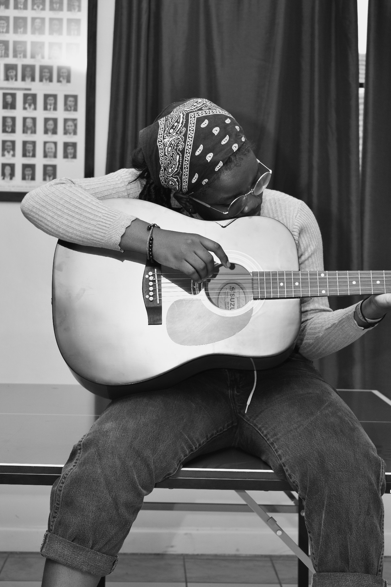
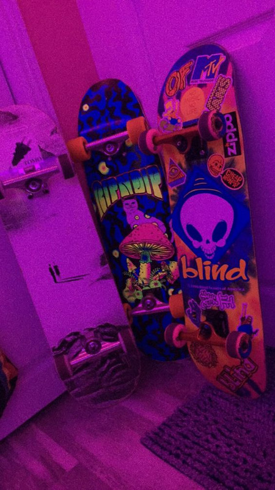

<!DOCTYPE html>
<head>
    
    <title>Document</title>
    <link rel="stylesheet" href="about.css">
</head>
<body>
    
</body>
</html>


<h3>About Me</h3>
<p>My name is  <b>Miriam Gilly Oluoch</b>mostly known as "Gift" born in  the year 2000,26th of june by Zainab Aswan Esther.
    I was born and raised in a single family together with my older brother,my mother was acting as a father and mother figure at the same time since the demise of my father i have seen all the struggles she has gone through to provide for us and all i can say about her she is really a hard working  woman.

</p>

<p><b>EDUCATIONAL BACKGROUND</b></p>
    
<P>I studied at <b>St.Augustine Prepatory school</b> located in Mombasa in the year 2007 to 2015.
completed my highschool in <b>Ngiya girls high school </b> located in Siaya County.Current student at AkiraChix learning about Technology </P> 

<p> <b>HOBBIES</b></p>
<ul>
    <li><p> Listening to music and playing music instruments i.e"guitars,violins(my favourite one)and piano</p></li>
    
    <li><p>Travelling</p></li>
    <li><p>Photography ,this how i express myself when i go out and explore beatiful things i will certainly take pictures of anything that has stolen my attention and also i do take portraits of people.</p></li>
    
    
    <li><p>Swimming especially at the ocean when it is too hot</p></li>
    
    <li><p>Skating</p></li>
    
</ul>
<p> I would like to raise awareness about <b>Mental Health issues</b> in African teens and youths since some of our African parents do not believe in such things and say that mental health issues exists in whites only.
i would like to prove the myth wrong and save depressed teens and youths so that it reaches a time where we can hear zero death rates about teens and youths commiting suicide because of mental health.</p>